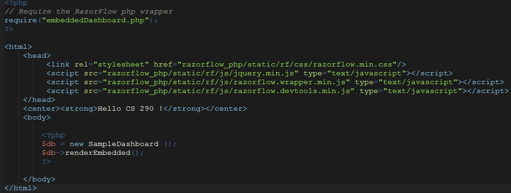

Embedding
Now that we can create a Dasboard, in most scenarios we would want to add it to our existing project which is slightly different than
our previous example.
Here's the code below.

It's almost the same code but with some tweeks.
-
First, we have to include the PHP file that we created in the previous page, but remove the rendering section.
We also have to extend the EmbeddedDashboard class in our contructor definition instead of the StandaloneDashboard.
Next, we need to link to three Javascript libraries and one CSS. In the body of the html, you just have to create an
instance of the class that you created in our example. Use the inherited method, renderEmbedded instead of renderStandalone.